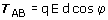

| Trabajo (Campo uniforme) Sea una carga q que se mueve dentro de un campo uniforme, desde un punto A hasta otro B en línea recta. El trabajo que realiza la fuerza eléctrica viene dado por: 
Un trabajo positivo significa que la carga q sola realizará el desplazamiento ganando velocidad. Un trabajo negativo significa que la carga q no realizará sola el desplazamiento, habrá que llevarla o lanzarla con velocidad suficiente. |